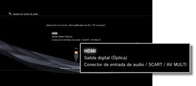
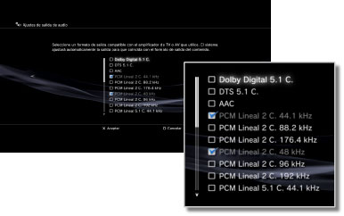
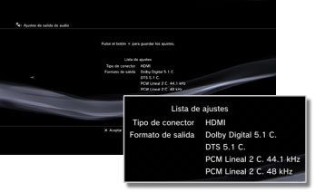

Ajustes > Ajustes de sonido > Ajustes de salida de audio
Ajustes de salida de audio
Puede establecer los ajustes de salida de audio del sistema. Estos ajustes se utilizan principalmente cuando el sistema está conectado a dispositivos de audio compatibles con la salida de audio digital, como por ejemplo amplificadores de AV (receptores) de sistemas de entretenimiento doméstico.
1. |
Compruebe los formatos que son compatibles con su dispositivo de audio. |
|||||||||||||||||||||||
|---|---|---|---|---|---|---|---|---|---|---|---|---|---|---|---|---|---|---|---|---|---|---|---|---|
2. |
Seleccione |
|||||||||||||||||||||||
3. |
Seleccione [Ajustes de salida de audio]. |
|||||||||||||||||||||||
4. |
Seleccione el conector de entrada del dispositivo de audio. Los números de los canales y los formatos de audio compatibles varían en función del conector que esté utilizando. 
|
|||||||||||||||||||||||
5. |
Seleccione los formatos de salida de audio.  |
|||||||||||||||||||||||
6. |
Compruebe los ajustes.  |
|||||||||||||||||||||||
7. |
Guarde los ajustes. |
|||||||||||||||||||||||

Notas
- El audio [PCM Lineal 2 C.] está configurado de forma predeterminada para emitirse a través de todos los conectores de salida. Si modifica los ajustes de salida de audio, se emitirá sonido únicamente desde los conectores ajustados.
- Si cambia los ajustes de salida de audio, el sistema no podrá emitir audio a través de varios conectores de salida de forma simultánea. Por ejemplo, si su sistema está conectado a un televisor mediante un cable HDMI y a un dispositivo de audio mediante un cable óptico digital, y cambia el ajuste a [Salida digital (Óptica)] en [Ajustes de salida de audio], dejará de emitirse sonido a través del televisor. Para emitir audio desde el televisor, cambie el ajuste a [HDMI] o seleccione
 (Ajustes) >
(Ajustes) >  (Ajustes de sonido) > [Multisalida de audio] y ajuste la opción en [Sí].
(Ajustes de sonido) > [Multisalida de audio] y ajuste la opción en [Sí]. - Si selecciona [PCM Lineal 2 C. 88.2 kHz] o [PCM Lineal 2 C. 176.4 kHz] en el paso 5, es posible que el sonido sea intermitente o que no se emita ningún sonido desde los dispositivos de audio.
- Al utilizar un cable HDMI, sólo el audio de [PCM Lineal 2 C.] se emitirá a través del software de formato PlayStation® y PlayStation®2. Para emitir audio en formato Dolby Digital o DTS, debe conectar el sistema PS3™ y el dispositivo de audio mediante un cable óptico digital y cambiar a [Salida digital (Óptica)] en [Ajustes de salida de audio].
- Si se conecta un dispositivo que no es compatible con el estándar HDCP (High-bandwidth Digital Content Protection, protección de contenido digital de ancho de banda alto) mediante un cable HDMI, no será posible emitir vídeo ni audio a través del sistema.
Avisos
- Es posible que algunos títulos de software de formato PlayStation®2 o PlayStation® funcionen de manera diferente en el sistema PS3™ que en los sistemas PlayStation®2 o PlayStation®, o que no funcionen correctamente en el sistema PS3™.
- Además, el software de formato PlayStation®2 no puede reproducirse en algunos sistemas PS3™. Para obtener más información, consulte [Tipos de discos que se pueden reproducir], visite el sitio Web de SCE de su región o revise la documentación suministrada con su sistema PS3™.